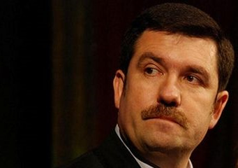
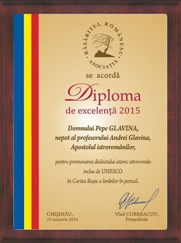

 Asociația Răsăritul Românesc, de la Chișinău, condusă de Vlad Cubreacov, a analizat și acordat diplomele de excelență pentru anul 2015 unor personalități din țara mamă și din jurul frontierelor care lucrează pentru păstrarea identității românești a românilor de pretutindeni.
Astfel placheta de onoare a fost acordată:
Excelenței Sale Bogdan Aurescu, Ministru al Afacerilor Externe al României, pentru promovarea activă și eficientă a interesului național, susținerea cursului european al Republicii Moldova, inaugurarea Centrului de Informare al României la Comrat și pentru apărarea drepturilor românilor din Transnistria și din Valea Timocului (Serbia de răsărit).
Excelenței Sale Vasile Soare, Ambasadorul României în Federaţia Rusă, pentru susţinerea şi promovarea identităţii naţionale a etnicilor români din spaţiul ex-sovietic, precum și pentru eforturile dedicate amenajării şi inaugurării la 25 octombrie 2015 a Cimitirului Militarilor Români căzuți în luptele de la Stalingrad (1942-1943).
Excelenței Sale Anca Corfu, Consul General al României la Cahul, pentru susţinerea şi promovarea identităţii naţionale a etnicilor români de la răsărit de Prut și pentru cooperarea eficientă cu administrațiile locale din zona de jurisdicție.
Excelenței Sale Nicolae al României Medforth-Mills pentru memorabila și încurajatoarea vizită oficială în Basarabia (Chișinău, Orhei, Bălți, Soroca) din 18-24 februarie 2015, ca reprezentant al Casei Regale a României.
 Domnul Pepe Glavina, nepot al profesorului Andrei Glavina, Apostolul istroromânilor, pentru promovarea dialectului istoric istroromân în dificultate şi a culturii istroromâne.
Domnului Nicolae Plushkis, Președintele Societății "Dacia" din Karaganda, pentru organizarea comunității românilor din Kazahstan în cooperare cu statul înrudit România.
Domnului academician Augustin Buzura, scriitor, președinte al Fundației Culturale Române (1990-2003) și al Institutului Cultural Român (2003-2004), director al revistei "Cultura", pentru promovarea limbii, culturii și identității românești în lume.
Domnului Tomáš VitÁsek, director al Muzeului regiunii Valahia din Cehia, pentru conducerea cu eficiență și competență a unei importante instituții muzeistice și de cercetare a comunității istorice valahe înrudite din Carpații Occidentali Exteriori (Beskizi).
Domnului Ion Popescu, Președinte al Uniunii Interregionale a Românilor din Ucraina, pentru întreaga activitate în serviciul cauzei românești.
Domnului colonel dr. Ionel Tălpău, director al Oficiului Național pentru Cultul Eroilor, pentru contribuția deosebită la amenajărea şi inaugurărea la 25 octombrie 2015 a Cimitirului Militarilor Români căzuți în luptele de la Stalingrad (1942-1943).
Domnului John Warwick Montgomery, avocat americano-britanic, pentru reprezentarea competentă și eficientă a Mitropoliei Basarabiei (Patriarhia Română) la Curtea Europeană a Drepturilor Omului.
Domnului Constantin Barbu, profesor și eminescolog, pentru coordonarea proiectului "Integrala manuscriselor Dimitrie Cantemir" (recuperarea din Rusia și publicarea în Țară, sub egida Academiei Române, a manuscriselor Domnitorului cărturar Dimitrie Cantemir).
Domnului Emil Țîrcomnicu, etnolog, pentru cercetarea etnografică a românilor sud-dunăreni: aromâni, meglenoromâni și timoceni.
Doamnei Gina Ștefan, jurnalistă, corsepondent al Agenției naționale de știri Agerpres în județul Harghita, pentru competență și probitate profesională, nerv jurnalistic și peniță ascuțită în abordarea problematicii românești din zona Carpaților de curbură.
Domnului Stevan Mihailov, președinte al Comunității Românilor din Serbia, pentru organizarea comunității românilor din Serbia în cooperare cu statul înrudit România.
Doamnei Angela Bîrsan, jurnalistă și scriitoare, corespondent TVR în județele Harghita și Covasna, pentru aportul deosebit, constant, îndeulungat și eficient adus cauzei românești prin scris și atitudine publicistică exemplară.
Doamnei Sânziana Pop, scriitoare și publicistă, fondatoare și director general al revistei Formula AS, pentru promovarea activă a interesului față de românii transfrontalieri și urmele lăsate de aceștia în cultura și civilizația altor popoare.
Domnului Ilia Gjoka, copreședinte al Uniunii Naționale a Aromânilor din Albania, președinte al Ligii Aromânilor din Albania, pentru organizarea comunității aromânilor din Albania, promovând și apărând drepturile aromânilor din această țară în cooperare cu statul înrudit România.
Domnului Pano Bakalli, copreședinte al Uniunii Naționale a Aromânilor din Albania, Președinte al Fundației Naționale "Nicolae Iorga" din Saranda, pentru organizarea comunității aromânilor din Albania, promovând și apărând drepturile aromânilor din această țară în cooperare cu statul înrudit România.
Domnului Spiru Fuchi, poet aromân din Albania, pentru talent artistic deosebit și pentru utilizarea ortografiei consacrate a dialectului istoric macedoromân/aromân pe baza alfabetului latin, cu utilizarea diacriticelor în cazul literelor Ăă, Ââ, Ḑḑ, Îî, Ľľ, Ǹǹ, Șș, Țț.
Domnului Vasile Tărâțeanu, poet și publicist român din Cernăuți, pentru talent artistic deosebit și pentru servirea cu dăruire a cauzei românești.
Domnului Vasile Romanciuc, poet român din Basarabia, pentru talent artistic deosebit și pentru poemul crestomatic, de virtuozitate matematică, Temă (teamă) basarabeană: "Prut – trup rupt".
Domnul Andrei Tamazlâcaru, muzician şi folclorist, artist al poporului, pentru valorificarea și promovarea folclorului românesc din Basarabia și pentru întreaga activitate în serviciul culturii române.
Domnul Virgil Coman, cercetătot de origine meglenoromână, șef al Serviciului județean Constanța al Arhivelor Naționale, pentru valorificarea patrimoniului arhivistic despre aromânii și meglenoromânii din Balcani stabiliți în statul înrudit România.
Domnul dr. Vasile Șiomaru, Chișinău, pentru albumele "Românii din jurul României în imagini" și "Românii din jurul României: monografie etnofotografică".
January 25, 2016
© 2016 Romanian Global News